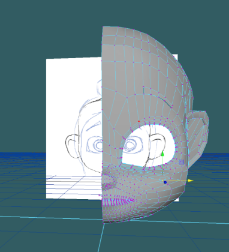
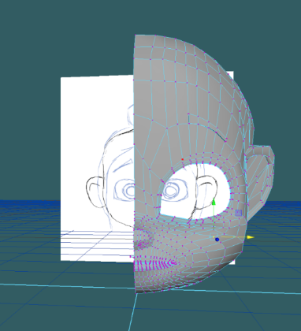
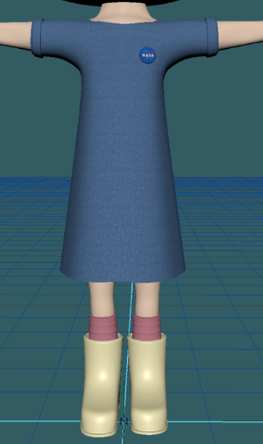
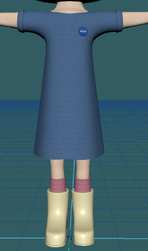
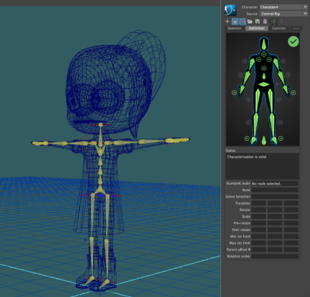
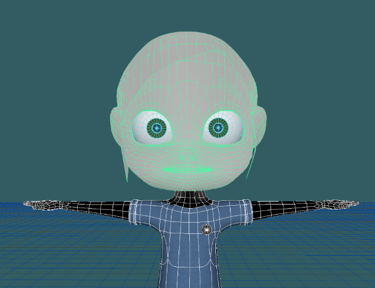

Lily Model

My CS 22 class spent four weeks learning how to model a biped in Maya. I created the character Lily, inspired by Wreck-It Ralph's Vanellope Von Schweetz as well as my younger siblings. Below are screenshots describing a bit of the modeling process as well as the final result and short animation.
A year after this class, I took CS27 "Projects in Digital Arts" and created a short film where my team incorporated this character. It was awesome seeing how much better our skills were and how much Maya improved in just a year!
T-Pose & Initial Sketches


Modeling
 


Texturing the Skin (with Subsurface Scattering) and Clothing
 

Rigging (Human IK, Skinning, Paint Weights, Blend Shapes)

